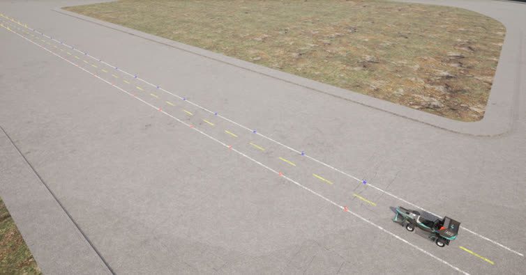

HRT D&E 感知组简介
HRT-D&E 感知组成立于中国大学生无人驾驶方程式大赛初创时期，依托团队深厚的技术积累和创新精神，紧密围绕国家新能源汽车与智能驾驶发展战略，专注于研发一套涵盖感知，规划、决策与控制的完整无人驾驶系统算法。该算法不仅具有高效、稳定的特性，还兼具优雅的设计，能够在复杂环境下实现精准感知与智能决策，精确控制，推动无人驾驶技术的发展与应用。
HRT-D&E 感知组作为无人驾驶系统的"大脑"，主要负责车辆的软件层的开发和传感器的调试，涵盖但不限于多种先进的感知算法，建图算法，规划算法和控制算法。通过高精度的传感器融合与复杂环境信息的处理，确保车辆能够实时构建精确的环境地图、准确规划行驶路径，并作出智能控制决策，保障无人驾驶的安全性与可靠性。同时，感知组致力于不断优化算法的稳定性与计算效率，以满足多样化的行驶场景与复杂道路环境的需求。

图1. 感知组属于HRT——电&无人(无人车)——感知
架构
感知组的系统架构由四个核心模块组成：环境感知、定位建图、决策规控以及仿真测试。
开发工作主要基于ROS2机器人操作系统，确保系统的高效运行与模块间的无缝协作。
环境感知是无人驾驶系统的“眼睛”，负责将外部世界的关键信息传递给“大脑”。HRT-D&E感知组采用128线激光雷达和高精度双目相机进行环境感知，确保获取更为精细的环境数据。在对输入数据进行预处理后，输出高精度的雷达点云和目标检测框，为后续的定位建图和路径规划提供可靠的基础。通过这些先进的传感器技术，系统能够精准感知周围环境，提升无人驾驶车辆的感知能力和安全性。
图2. 使用雷达扫描的点云
图3. 使用相机识别的桩桶
相关知识
传感器数据预处理
- 传感器空间同步
- 传感器时间同步
- 传感器数据融合
- 卡尔曼滤波
深度神经网络
- 2D Detection
- 3D Detection
定位建图是无人驾驶系统的核心技术之一，它使车辆能够精确地确定自身位置并实时生成周边环境的高精度地图。这一技术是安全行驶和精确路径规划的基石，确保车辆能够在动态且复杂的环境中高效、安全地进行自主驾驶。
HRT-D&E 感知组采用高精度组合惯性导航技术（GNSS 与 IMU）定位，并通过将雷达，相机与惯导数据融合，经过 slam 算法处理，获取高精度全局地图。这些地图为后续的路径规划和决策控制提供了坚实的数据支撑，确保车辆在动态和复杂的驾驶环境中实现高效、安全的自主驾驶。

图4. 立体建图
相关知识
- slam 算法
- 组合惯性导航
- rtk 差分定位
- 重定位算法
- 雷达里程计
- 点云补偿
- 卡尔曼滤波
决策规控模块是无人驾驶系统中尤为重要的部分，如果说环境感知是眼睛，那么决策规划就是无人驾驶汽车的大脑，决策规控模块主要完成环境信息的处理和车辆运动状态的控制，接收建立好的高精度地图和当前车辆的运动状态，根据需要完成的任务（如高速的沿着赛道跑动）规划出一段时间上车辆的动作空间（包括位置和姿态）并且结合车辆的动力学模型进行车辆的控制，最优化控制效果，决策规控包括轨迹规划和决策控制两个子模块
轨迹规划
轨迹规划是无人驾驶系统中至关重要的组成部分，它确保车辆能够在复杂多变的环境中识别并遵循最佳行驶路线，有效避开障碍物，并完成既定任务。这一过程不仅直接关系到行驶的安全性和效率，还影响乘客的舒适体验，是实现高级自动驾驶技术的核心。在高速竞技场景中，路径规划更是无人车技术突破的关键。
轨迹规划不是简单的确定出当前赛道内车辆的行驶路径，而是要结合车辆的性能和当前车辆的状态进行动作的规划，最终实现以最佳速度和最佳姿态通过弯道。为了在竞争激烈的比赛环境中取得更优异的成绩，HRT-D&E 感知组专注于针对建图情况采用不同的优化策略。在需要实时计算时简化优化模型，以保证轨迹优化任务的完成。在建图完成时，优化目标为更好的操控性，更低的能耗和更短的圈速，并采用先进的优化算法求解。
图5. 路径规划
相关知识
- 路径规划
- 速度规划
- 插值与拟合
- 最优化算法
决策控制
决策控制是无人驾驶系统中极为关键的环节，它负责将感知与路径规划系统提供的数据转化为具体的车辆控制命令。这一过程确保车辆能够根据实时环境与路况信息作出快速且准确的反应，从而在保证安全的前提下优化行驶策略，提升行驶效率和乘客舒适度。
HRT-D&E 感知组的控制模块采用轨迹跟踪的方式，通过自适应选点选取规划路径中最合适的预瞄点，通过各种控制算法，包括但不限于 PID， 纯追踪算法， 斯坦利算法，模糊控制，滑膜控制，专家系统，模型预测控制动态调整车辆的状态，精确的控制速度和转向，确保无人驾驶在复杂环境中的安全性和可靠性。
图6. 八字绕环项目中控制模块非常重要
相关知识
控制算法
- PID
- 纯追踪
- MPC
- 模糊控制
控制理论
- 自动控制原理
- 现代控制理论
- 智能控制算法
- 专家系统
车辆模型
- 自行车模型
- 阿克曼模型
- 车辆运动学模型
- 车辆动力学模型
仿真测试在无人驾驶技术开发过程中扮演着至关重要的角色，它不仅是算法开发、设计和测试的核心平台，更是确保研发工作高效、精确进行的关键。通过高质量的仿真测试，开发团队能够在实际应用前详细预测和评估各种算法和系统设计的表现，从而有效降低实车测试的风险和成本，加速产品的研发周期。
HRT-D&E 感知组采用先进的仿真平台 CarlaUE4，该平台以其高度的灵活性和可配置性，成为业界的选择。在此平台上，HRT-D&E 感知组依据车辆状态和实际环境信息建立车辆模型和标准化赛道信息，以确保仿真结果的精确度和实用性。
通过 CarlaUE 4 仿真平台，HRT-D&E 感知组能够进行详尽的场景测试和算法验证，如自动驾驶的决策制定、感知系统的准确性测试以及控制策略的有效性评估。这些测试不仅模拟了真实世界中的复杂多变条件，还允许工程师在安全的虚拟环境中调整和优化技术，确保每一项技术在部署前都经过严格的测试和验证，从而大幅提升了系统的设计质量和开发效率。
图7. 仿真界面1
图8. 仿真界面2
相关知识
仿真测试
- CarlaUE4
- Gazebo
- 测试理论
- 车辆建模
HRT-D&E 感知组作为无人驾驶系统的大脑，我们对队员有着严格的要求，每一位正式队员都有以下能力
基本能力
- C++
- Linux
- ROS2
- Git
基本素养
- 有责任心，上进，有自我认识
- 能吃苦耐劳，善于思考，肯钻研
- 善于团队合作，能协调沟通
- 能够为车队付出，遇事不乱，能及时解决
HRT-D&E 感知组招生面向全校大一新生，我们将按模块进行招生。考虑到大一新生需要一定的时间适应大学生活，我们考虑在后半学期再进行招生，当前仅仅用作宣传，打破大家的信息差，给大家提供一个不错的选项。
感兴趣的同学可以先对我们组进行简单了解，也欢迎联系我们进行详细咨询，招生具体信息会在 11 月公布，敬请期待......
我们欢迎所有对赛车和无人驾驶感兴趣的 24 级新生前来咨询，我们的纳新会经过一段时间的培训，不管是否有相关经验， 都可以参与我们的培训，专业不限、能力不限，只要你有学习的心态，就有机会加入我们！
在这里，你能收获作为 GW-HRT 队员的至高荣誉；
在这里，你能提升你的技术能力和团队协作能力；
在这里，你能接触到诸如人工智能、无人驾驶等前沿技术；
在这里，你还能收获超级多志同道合的好朋友，体验共同为自己喜欢的事业奋斗的氛围！
还在等什么，快来成为高端人才吧！
组长：
李钦 QQ: 972619081
成员：
刘钰康 QQ: 2823581355
李如一 QQ: 327754184
高涵锴 QQ: 1971679713
刘平安 QQ: 2181662158
任少山 QQ: 1084075303
郑权涌 QQ: 2421594879
杨志超 QQ: 1036711084
罗鹏硕 QQ: 3437154578